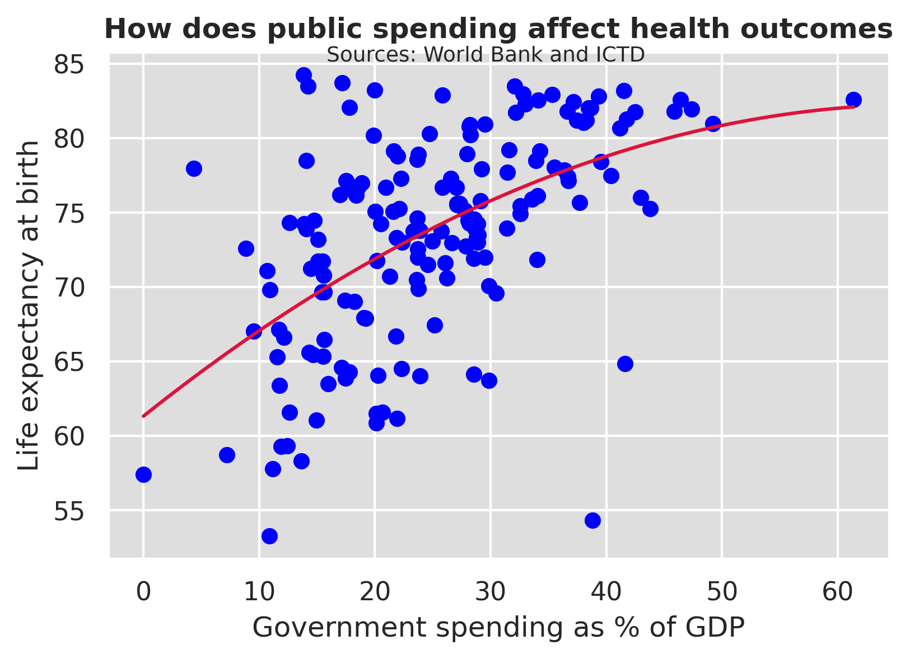
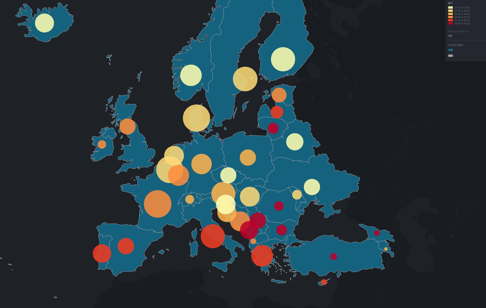

Traditionally economists predict that higher taxation would harm the long-term growth of an economy as they limit savings rates, taking away from potential private sector investment, as seen in Solow (1956). This project attempts to test whether this relationship can be seen in real-world data and why this may be the case for certain countries as opposed to others. There is also a discussion of the other potential benefits of taxation and whether these translate to the data.
Shows a positive correlation between tax rate and incomes which goes against traditional economic theory. Countries with a higher proportion of direct taxes tend to have both higher overall tax rates and higher GDP per capita, providing a potential mechanism for this correlation; income taxes may be more effective than consumption taxes. This relationship, however, is unlikely to be causal since there may be omitted variables that affect both tax rate and incomes.
Limiting investment is the predicted mechanism by which this growth is stunted; it would be expected that innovation would be lower in countries with higher tax rates. This is not seen in the data; countries with higher tax rates tend to have higher innovation scores, with a relatively strong R2 value and not the predicted negative relationship. There are not simply structural differences between continents because the relationship is also seen within continents. The regression was formed in vega with a layered chart.
These two graphs focus on two countries, Hungary and Norway, with similar populations and tax rates but with Norway having a significantly larger per capita income. Norway has a greater focus on income taxes, corporate and personal income, which are more likely to be progressive and tax a higher proportion of wealthier incomes. However, Hungary receives almost no revenue from corporations, with a much larger focus on regressive consumption tax. To create a stacked bar chart from data that is proportions of the whole, the data was made cumulative using the transform command
As expected, there is a strong positive relationship between tax revenue and government spending. This holds over time, with an R2 always above 0.5
This is a regression performed in python; a quadratic regression best fit the distribution of data because it is a generally positive relationship that sees lower marginal benefits of spending on health outcomes at higher levels of government spending.
This shows a significant level of clustering of the level of inequality and tax rate, with Southern Europe having higher levels of inequality and lower taxes than the North. This higher inequality is seen partially separate to the level of tax, suggesting a potential cultural impact on outcomes arising from taxation; this may be because of cultural tendencies for progressive or regressive taxation or because of companies and individuals reacting differently to different levels of taxation. There appear to be different reactions to taxation in different regions.
There is some evidence for the highest tax rates correlating with confidence in government; if a government is less involved in people’s lives there is lower trust towards that government. The data for trust was scraped from the Pew website and the tax data is from the FRED API on python. This means that this graph can be updated by re-running the python code and uploading the CSV to GitHub.
The majority of the data was downloaded as a CSV from the data sources and then cleaned in python and graphs comparing two variables were merged in python, using pd.merge. There was a potential issue of merging using country names because different data sources use different spellings of the same country; I, therefore, used merged using 3-letter iso country codes within the data, which is the same across data sources. The data for continents was scraped using pandas on python from the Statistics times website. Cross-sectional correlation graphs used all the possible countries with data available for the chosen graph. All data from the OECD was in wide form so had to be rotated into long-form in python using the melt function.
Overall, there appears to be a general positive effect of taxation on the outcomes for a country, however, there is a large degree of variance within this, with evidence that both what the taxes are used to fund and where the tax revenue arises from are key to achieving positive results. A greater focus on more progressive direct taxation appears to have greater positive outcomes. Further study could focus on this more to find mechanisms behind this.